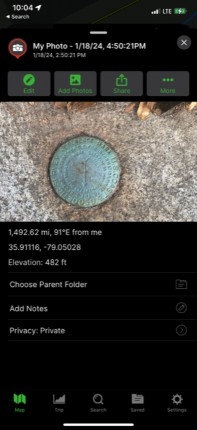
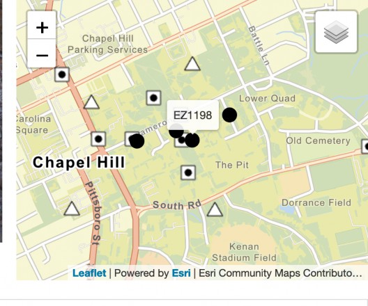
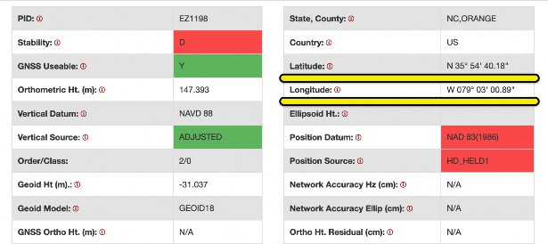
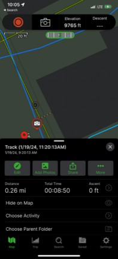
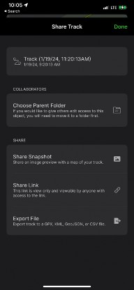
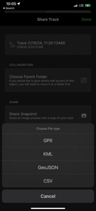
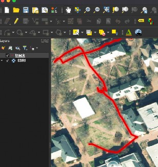

The purpose of homework 2 is for you to practice getting geographic data using your cellphone and an app for managing the GPS information that is being collected by your cellphone GPS chip. We will be using free version of GAIA GPS. You can use other apps if you prefer as long as you submit the two requirements for this class, which are:
The measurement of expected and observed values in two survey markers at UNC.
A track in geoJSON format forming your first initial.
A map of the track over an image basemap. The map should includes a title, scale, legend and north
While working on this assignment, keep in mind that safety is first. The following exercise should be done inside the campus and always considering safety first. Only walk in sidewalks or in the green quad if allowed. While creating tracks do not walk while looking at the cellphone. If you need to look at the cellphone stop and make sure you are in a safe place. Also, when searching for the survey markers, do not walk while looking at the cellphone.
As discussed in class, most cellphones have a GPS chip that receives the signals from GPS satellites. The satellite signal contains information that allows the cellphone GPS chip to calculate the distance the cellphone is from the satellite. By knowing the distance of at least 3 satellites, the cellphone GPS chip can determine its current latitude, and longitude using trilateration.
However, measurements are not precise. With more GPS satellites signals your calculation will be better and you can also get better elevation values, however other factors will affect your calculation. We will be evaluating the observed GPS location versus the expected values. You will observe the values obtained by your cellphone using Gaia GPS and the expected values from 2 survey markers.
UNC is full of survey markers. Survey markers have a very precise location. Go find two survey makers using this site (https://geodesy.noaa.gov/datasheets/passive-marks/ index.html?PID=EZ1198) and take note of their coordinates. One of the markers is just outside the western stairs from Carolina Hall towards Polk Place. You can’t use that one for this homework. You can use any two other markers as long as they are at least 100 meters away from each other. When you find the
marker, place your cellphone as close as possible to the marker, click the + sign on the lower left of the Gaia GPS app and then click the camera icon. Take a picture and save it. You should notice that the picture has a latitude and a longitude value.

Most of these markers have not necessarily been adjusted to be at the precise measurement of modern survey standards that incorporate new and more precise measurements of the earth. However, they will serve as a practical way to think about how to collect GPS data and evaluate its error.
You can find survey markers by using the map on the website and also get the values of the survey marker by clicking on the icon of the map.

This will take you to a page with more information about the marker including the latitude and longitude. Convert the value to decimal degrees using the formula shown in class or using an online conversion tool.

In an excel spreadsheet make a table that has the following columns. survey_maker, expected_longitude, expected_latitude, observed_longitude, observed_latitude, delta_x, delta_y, name (8 columns in total).
Gaia GPS as well as other GPS devices can collect waypoints in time intervals and connect them with lines. These are often called tracks.
Look at the UNC campus using a map (Like GoogleMaps, for example) and plan how you would have to walk if you wanted to write your first name’s initial using tracks. Walk only in pedestrian areas where no cars drive.
To start collecting a track in Gaia GPS you only have to click the red button on the upper left corner of the app. To finish the track you just press the same upper red button in the upper left corner and then click finish. When finish click save. You should be able to see the track in your Gaia GPS app. Click the track and select the share icon in your cellphone.

Select the Share, then Export File options.

Under Export File, Select geoJSON.

Finally, send it as a geoJSON to your email account. Download the geoJson from your email and open the geoJSON in QGIS and make sure it displays correctly over where you walked. Your track should look something like mine below.

Name the geoJSON using this convention: yourName_lastName.geojson. Do not leave spaces in the name.
Make a map that includes your track, a basemap (ideally one with images), a title, a legend, a north and a scale.